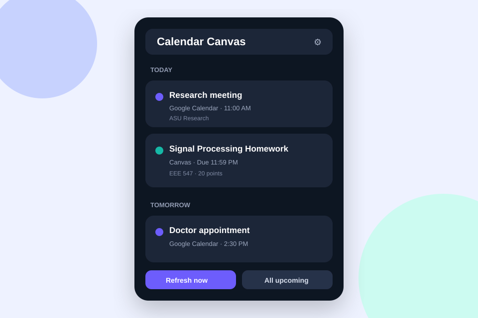

📅
Google Calendar
Read-only access to upcoming events from your primary Google Calendar through OAuth.
Calendar Canvas Dashboard is a lightweight, always-on-desktop productivity widget for students, researchers, and anyone who lives between Google Calendar and Canvas LMS.

The dashboard merges upcoming events and academic deadlines, sorts them chronologically, and keeps them visible in a compact desktop window.
Read-only access to upcoming events from your primary Google Calendar through OAuth.
Assignments, quizzes, discussions, and planner items from any Canvas instance that permits personal access tokens.
Frameless, resizable, always-on-top, auto-refreshing, and able to launch automatically when you sign in.
Calendar apps show meetings. Learning systems show assignments. Your actual workload spans both.
University students, teaching assistants, graduate researchers, faculty, online learners, and anyone managing coursework alongside meetings and personal commitments.
The current release supports one Google account and one Canvas account. Multiple-account support is planned.
Node.js 20 LTS or later is required when running from source.
npm install
npm start
# Build an installer
npm run dist:winIf electron-builder cannot create symbolic links, enable Windows Developer Mode or run the build terminal as Administrator.
npm install
npm start
# Current Mac
npm run dist:mac
# Universal Intel + Apple Silicon
npm run dist:mac:universalA macOS DMG should be built on a Mac. An unsigned personal build may require Control-click → Open on first launch.
Canvas → Account → Settings → Approved Integrations → New Access Token. Enter your Canvas base URL and token in the app Settings.
Enable Google Calendar API, configure the OAuth consent screen, add your account as a test user, and create a Desktop app OAuth client.
Paste the downloaded OAuth JSON into app Settings, select Connect Google, and approve read-only Calendar access in your browser.
Turn on “Start when computer turns on” in Settings so the dashboard opens after Windows or macOS login.
There is no analytics service or cloud backend in this project. Google Calendar is requested read-only, and Canvas data is fetched directly from your institution.
Read the privacy note